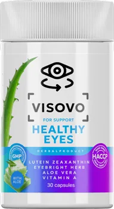

Siguranță garantată
Metodă 100% naturală
Plată strict la livrare
Stopează deteriorarea
40 Mil.
Oameni suferă de pierderea vederii necontrolată
35,000+
Clienți ne-au ales pentru a preveni asta
100%
Ingrediente sigure recunoscute de medicină
No. 1
Soluție preventivă în Europa de Est
Peste o anumită vârstă sau din cauza orelor petrecute în fața ecranelor, mușchii oculari încep să slăbească fatal. Ochelarii nu tratează cauza – ei doar vă fac mușchii și mai leneși. Riscul real nu este doar să purtați ochelari, ci apariția presiunii interioare care favorizează glaucomul și orbirea prematură. Învățați să preveniți antes de a fi prea târziu.
Tensionarea ochilor voștri trebuie combătută din interior. Visovo întărește microcirculația exact acolo unde ochii au nevoie și vă readuce confortul clarității.
Mușchii oculari focalizează vederea ascuțită. Când aceștia funcționează normal, nu vă mai e greu să citiți etichete mici sau mesaje.
Senzația de "nisip în ochi" sau arsurile dispar, formula menținând lăcrimarea naturală excelentă indiferent de efort.
O circulație sangvină optimă echilibrează presiunea intraoculară, scăzând puternic riscul degenerării maculare cu vârsta.
Peste 35.000 de români și-au luat în propriile mâini viata vizuală și independența fizică.
"Vederea mea nu era așa înainte... Ca analist, oboseam repede lucrând la birou, ochii îmi ardeau și lăcrimau în fiecare seară. Îmi era frică că voi pierde capacitatea de muncă. Nu voiam ochelari groși. O cură de Visovo a schimbat totul. Nu mă mai tem că vederea mi se va înrăutăți brusc, senzația de oboseală a dispărut."
Andrei Popescu
38 ani · București
"După 40 de ani, cititul devenise un chin absolut. Începusem să țin cărțile sau telefonul tot mai departe de mine. Mă simțeam îmbătrânită cu acei ochelari imenși. Prietena mea mi-a recomandat această soluție și am rămas uimită: acum citesc mesaje, etichete pe medicamente și reviste fără să îmi stric ochii. Mă simt iar tânără!"
Elena Ionescu
46 ani · Cluj-Napoca
"Vederea mea pica de la lună la lună din cauza vârstei. Eram dependent de copiii mei ca să rezolv documente sau să citesc contracte. Mă speria teribil gândul la glaucom sau orbire, la operații cu bisturiul invaziv. Băiatul meu mi-a comandat Visovo. De atunci, tensiunea oculară mea a scăzut, vad clar farurile la distanță ploi și conduc de plăcere!"
Mihai Stan
52 ani · Iași
Stopează degradarea în prima lună
Îmbunătățesc vizibil claritatea
Apreciază faptul că nu plătesc nimic în avans
Odată cu înaintarea în vârstă și expunerea zilnică la ecrane digitale (telefoane, calculatoare, televizoare), milioane de români se confruntă cu deteriorarea vederii. Simptome precum vederea încețoșată, dificultatea de a citi de aproape, durerile de cap frecvente și senzația de "nisip în ochi" sau ochi uscat au devenit probleme cotidiene. Visovo a fost dezvoltat special pentru a oferi o soluție naturală și o alternativă la ochelarii de vedere, atacând nu doar simptomele, ci și cauza principală: funcția slăbită a mușchilor oculari și irigarea sanguină deficitară a retinei.
Majoritatea persoanelor apelează la ochelari sau lentile de contact la primele semne de slăbire a vederii (miopie, hipermetropie, prezbiopie). Din păcate, lentilele artificiale nu "vindecă" problema. Ele acționează ca o „cârjă”, forțând mușchiul ocular să devină și mai leneș, ceea ce duce inevitabil la creșterea dioptriilor în fiecare an. Spre deosebire de soluțiile temporare, Visovo funcționează prin tonifierea mușchilor oculari interni (cum este mușchiul ciliar), redând elasticitatea cristalinului. Această acțiune de restaurare previne degradarea continuă și vă ajută să vă recăpătați claritatea naturală a focusului vizual pe distanțe lungi și scurte.
Cea mai mare teamă a adulților din ziua de azi este pierderea autonomiei și necesitatea unei intervenții chirurgicale cu laser la ochi, proceduri care sunt adesea extrem de costisitoare, de speriat și având riscuri permanente. Ignorarea zecilor de ani de tensiune oculară și a uscăciunii cronice poate crește exponențial riscul apariției unor boli oftalmologice grave, ireversibile, cum ar fi glaucomul (cauzat de presiunea intraoculară crescută) sau cataracta timpurie. Formula fitochimică excepțională din Visovo protejează retina de stresul oxidativ, normalizează tensiunea din interiorul globului ocular și îmbunătățește acuitatea vizuală. Acționează literalmente ca un scut defensiv esențial împotriva îmbătrânirii ochiului pentru a stopa frica de orbire și dependența de alții.
Căutați des Visovo preț farmacie, "unde să găsesc Visovo în Farmacia Tei sau Catena", sau vă întrebați unde puteți plasa o comandă sigură online? Pentru a proteja clienții din România de produse contrafăcute pe diferite site-uri obscure și pentru a menține un preț foarte accesibil, fără adaosuri comerciale uriașe impuse de lanțurile farmaceutice clasice, producătorul a decis ferm ca distribuția oficială să se facă exclusiv online. Numeroasele Visovo păreri și recenzii pozitive confirmate pe forumuri medicale evidențiază beneficiile majore ale unei cure complete: reducerea dureroasă a inflamației, recăpătarea abilității de a citi cuvinte mici și stoparea absolută a senzației de arsură după orele de lucru intens. Pe platforma noastră oficială vă oferim cel mai bun preț dedicat direct pieței românești, cu siguranța deplină a plății la livrare (ramburs). Nu riscați nimic pe internet. Investiți azi într-o prevenție clară pentru independența voastră vizuală.
Pentru orice întrebare de facturare/expediere fizică din România pe plase, vă rugăm adresați-vă apelurilor contact post-livrare regăsite alături de flacon prin curierul aprobat de brand.
Navigând pe aici, recunoașteți că platforma este un vector comercial afiliat și plasați acordurile finale către magazinul de tip merchant final ce execută transferul logistic în mod absolut independent.
Ne pare bine să vă protejăm. Colectăm doar cookies analitice esențiale performantei pe site (Google Analytics). Niciodată carduri, deoarece achitați complet DOAR LA LIVRARE.
Dacă experiența nu-i utilă conform standardului legal, solicitați returul prin adresa primită pe ambalaj de la depozitul din România care va realiza inspecția conform codurilor valabile ale consumatorului.